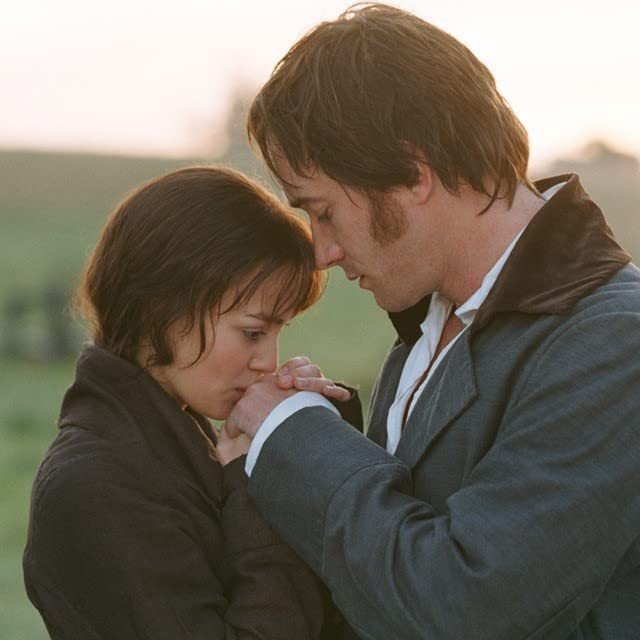
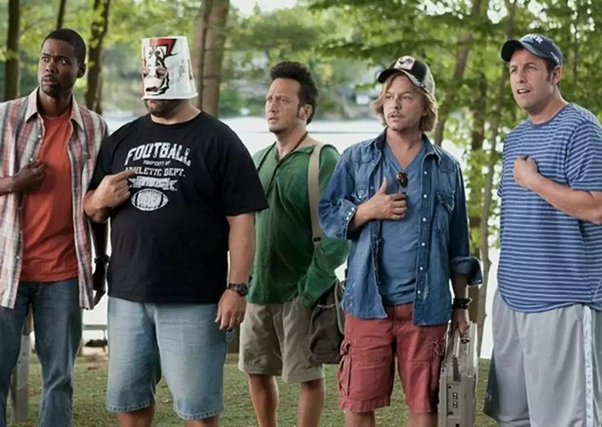
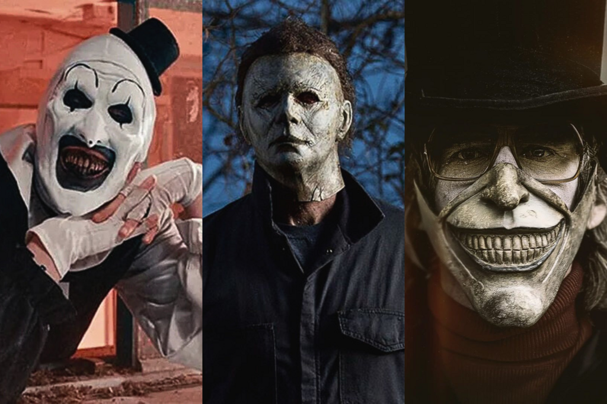

Bem-vindo ao mundo do cinema
O cinema é uma expressão artística e um meio de entretenimento popular que combina imagens em movimento e som para contar histórias, conhecido como a sétima arte. Sua origem remonta ao final do século XIX com o invenção do cinematógrafo pelos irmãos Lumière, que permitiu projetar filmes para um público. O cinema envolve várias etapas, desde a criação do roteiro e cenários até as filmagens, edição e exibição, formando uma indústria complexa.
Caracteristicas do cinema
- Contação de histórias por meio de imagens e sons.
- Estrutura narrativa com início, meio e fim (na maioria dos filmes).
- Utilização de roteiro como base.

Romance
O romance é um gênero textual narrativo, extenso e complexo, escrito em prosa, que conta uma história com diversos personagens e um enredo detalhado em um determinado tempo e espaço. Ele se diferencia de outros gêneros por sua amplitude e, embora o termo remeta a histórias de amor, ele abrange uma variedade de temas, como o policial, o histórico, o psicológico, entre outros.
Saiba mais
Comedia
O gênero comédia busca entreter o público e provocar o riso através de situações humorísticas, diálogos espirituosos, ironia, sarcasmo e paródia. Com personagens explorando as peculiaridades humanas e, por vezes, envolvendo situações absurdas, a comédia costuma ter um desfecho positivo e otimista, abordando temas leves e sociais de forma satírica ou cotidiana.
Saiba mais
terror
abrange obras literárias, cinematográficas e outras formas artísticas que têm como objetivo provocar medo, tensão e desconforto no público. Ele se diferencia do horror, que provoca choque após a exposição de algo terrível, por focar na antecipação e no suspense do que está para acontecer. O terror frequentemente usa elementos sobrenaturais ou a deturpação da realidade para criar um universo assustador e explorar temas como o medo do desconhecido e questões humanas profundas.
Saiba mais